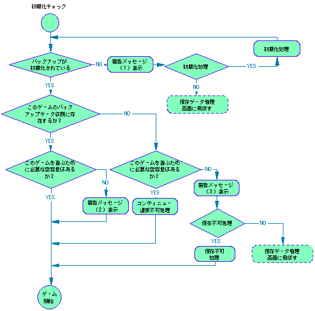
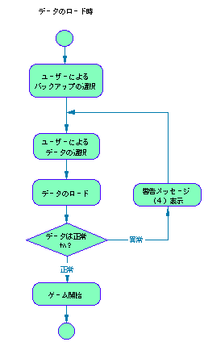
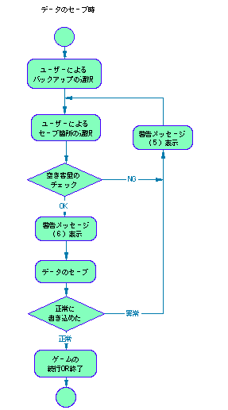

Return to previous page | Return to menu
3> Warning messages and sequences
Be sure to prepare the following warning messages for each process of initialization check, existence / capacity check, load, and save. Use the key terms listed in the Glossary of Terms, and specially be careful not to use “prohibited phrases” in messages .
When main unit RAM or cartridge RAM is not initialized .
= Expression in the main unit BOOT ROM =
- Erase all (initialization)
- “Erase all records on the device. Are you sure? (Initialization)”
- “All records on the main unit have been erased (initialized)”
- “Failed to initialize.”
= Recommended example =
- “The main unit RAM is not ready for backup yet (not initialized)”
- “Erase all records in main unit RAM. (Initialize) Are you sure? Yes No”
- “All records in main unit RAM have been erased (initialized)”
- “All records in main unit RAM could not be deleted. (Failed to initialize)”
- “Erase all records on the saved data management screen of the SEGA Saturn unit. (Please initialize)”
- “If you hold down the L or R button and press the reset button, you will proceed to the saved data management screen of the SEGA Saturn unit.”
* The word “initialization” is always treated as parentheses and cannot be used alone.
* "Main unit (RAM)" ← → "Cartridge (RAM)"
If there is not enough space to save . Since there is nothing to save other than sacrificing existing records, it is necessary to communicate that fact. At the same time, it is necessary to provide information on the capacity used in this game.
= Recommended example =
- “There is not enough free space to save a new record. If you start the game as it is, you cannot save a new record without erasing the previous record.”
The
- “A free space of *** is required to save a new record.”
- “On the saved data management screen of the Sega Saturn, delete other game records or copy them to the cartridge RAM and restart the game. While holding down the L or R button, press the reset button. Press to go to the saved data management screen. "
* Not necessary if it is judged that there is no problem even if the record is updated due to game characteristics.
There is no game data and no free space. In other words, when the save function cannot be used at all .
Even in this case, it must be possible to play the game at the discretion of the user (the save function cannot be used as a matter of course). At the same time, it is necessary to provide information on the capacity used in this game.
= Recommended example =
- “If you start the game as it is, you cannot save the record. Do you want to start the game? Yes No”
- “A free space of *** is required to save this game record.”
- “On the saved data management screen of the Sega Saturn main unit, delete the record of other games or copy them to the cartridge RAM and restart the game.”
- “If you hold down the L or R button and press the reset button, you will go to the saved data management screen of the SEGA Saturn.”
If you can't continue because there is no game record, that is, the initial state immediately after purchase. It is necessary to take measures such as making it impossible to select the continue item, or skipping the game data selection screen (load screen) itself.
Warning for loading errors, such as reading failed or data contents corrupted . Tell them that it could not be loaded or that the record was not available.
= Recommended example =
- “The recording could not be read correctly.”
- “Loading failed.”
- “You cannot start the game with this record.”
- “This record cannot be used.”
* Do not use expressions that may be confused with hardware failures, such as “broken”.
Warning about abnormalities when saving, such as when writing failed or when the capacity was full and could not be saved . If the capacity is full, you must provide information about the capacity used in the game.
= Recommended example =
- “The record could not be saved correctly. Please try again.”
- “A free space of *** is required to save this game record.”
- “On the saved data management screen of the Sega Saturn main unit, delete the record of other games or copy them to the cartridge RAM and restart the game.”
- “If you hold down the L or R button and press the reset button, you will go to the saved data management screen of the SEGA Saturn.”
Warning not to turn off the main unit during saving . It is desirable to display it at an appropriate place in the game sequence or to specify it in the instruction manual.
= Recommended example =
- “The game record is being saved. The record may not be saved correctly if the power is turned off.”
= Expression in the main unit BOOT ROM =
No. Name Comment Usage Amount Select and erase the main unit free space (no unit)
- “Delete the record on the unit. Select the record you want to delete and press the C button.”
- “Erase ... from the main unit. Are you sure? Yes No”
- “... The record has been erased from the main unit.”
- “… The record could not be deleted from the main unit.”
Copy to cartridge
- "Copy the main unit record to the cartridge. Select the record you want to copy and press C. (Cancel with B button)"
- "Are you sure you want to copy ... to the cartridge?"
- "I copied ... to the cartridge."
- “The recorder record could not be copied to the cartridge.”
- "There is a record with the same name on the cartridge. Do you want to delete the record on the cartridge and copy?"
- "Cannot copy because there is not enough free space on the cartridge."
- Record edit screen
Record of
-
- Name of the record
- Comment Date Usage amount Free space
- Switch Delete Copy Reorder Date End
- body Cartridge expansion memory
- Number of records
- ~ records will be deleted.
- Are you sure? YES NO
Copy
- ~ records.
- There is a record with the same name.
- Do you want to copy it?
- Copying failed.
- is full.
- ~ records could not be copied.
- ~ copies have been copied.
- Copy destination
- Cancel
- File name order
- New order
- New order for each game
Figure Separate Volume 1-2. Initialization Check / Existence / Capacity Check Processing Sequence

Figure Separate volume 1-3. Load processing sequence

Figure Separate volume 1-4. Save processing sequence

Return to previous page | Return to menu